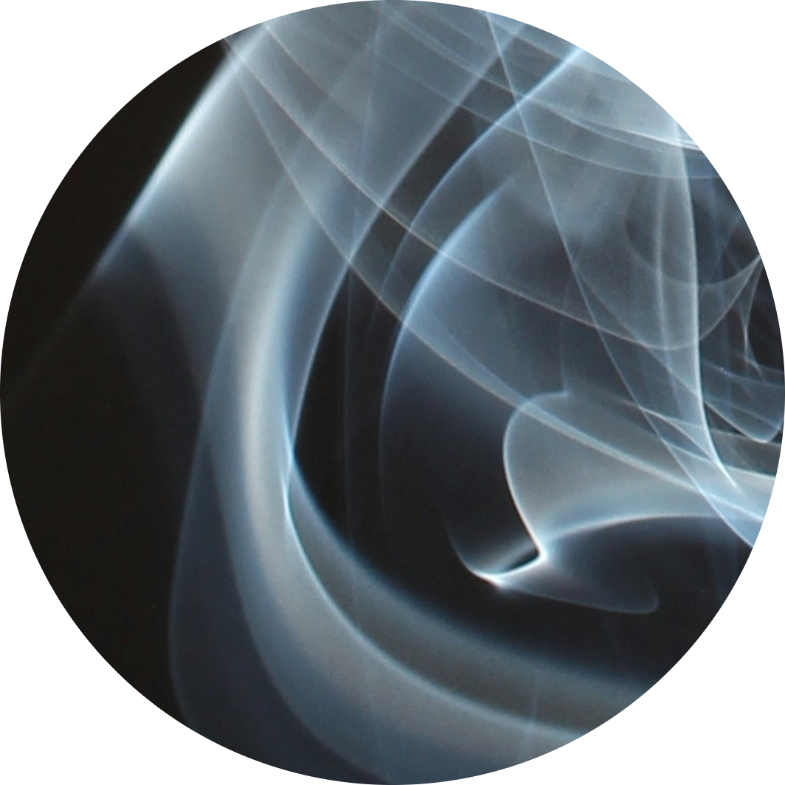

smoke

the most ephemeral side-dish
smoked salmon, smoked cheese, smoke anything and you have a delicacy! In this recipe you will learn how to create the base of this exquisite taste from scratch.
ingredients
- a torn up love-letter
- your favourite spice
- 1 large ceramic bowl
- 1 spark
- 1 mason jar
start cooking
- find or write a love letter and tear it apart into tiny pieces. please note that it has to be sincere in order to avoid a bitter taste
- place a three of the torn pieces in a large ceramic bowl. put the rest into a plastic box and freeze it so they don't expire.
- add a spice of your choice and a spark so it catches fire. make sure there is nothing flammable in close proximity, open your windows and be cautious. fire can be dangerous
- when the fire has stopped burning catch the smoke by holding your mason jar upside down above the bowl. close the lid.
- you have successfully gathered smoke. if you don't use id immediately place the jar in the fridge where it will last up to 5 days.
go back